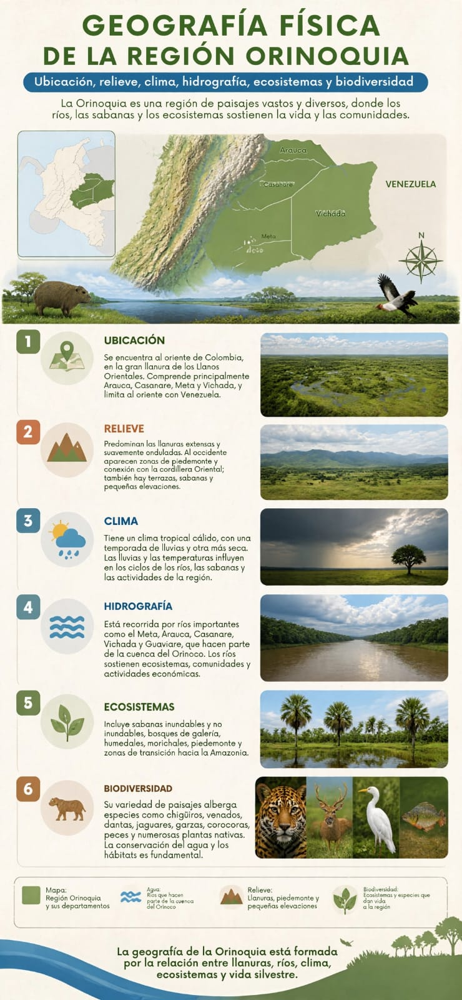
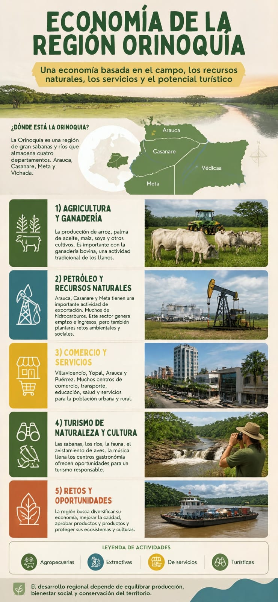
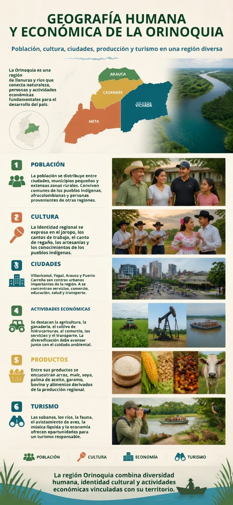
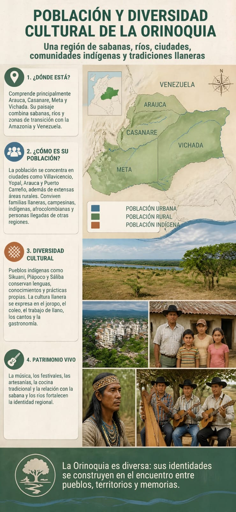

COLOMBIAORINOQUÍA
¿Dónde queda?Al oriente del país, entre la cordillera Oriental y la frontera con Venezuela.

PROYECTO · CIENCIAS SOCIALES · 11°
COLOMBIA EN LA WEB
Una ruta hecha por estudiantes para conocer el territorio de las sabanas, los ríos, la biodiversidad, las comunidades y las actividades que mueven esta parte de Colombia.
01 · UBICACIÓN
Para este proyecto usamos el recorte escolar más común de la Orinoquía: Arauca, Casanare, Meta y Vichada. Algunas fuentes oficiales usan delimitaciones más amplias según el tema estudiado.
02 · GEOGRAFÍA FÍSICA
La región no es una superficie totalmente plana. Hay piedemonte, llanuras, sabanas, bosques y zonas de transición que explican por qué el territorio se ve tan distinto de un lugar a otro.

Hacia el occidente aparecen las estribaciones de la cordillera Oriental y luego se abren amplias llanuras. En el piedemonte, los ríos descienden desde zonas montañosas hacia las tierras bajas.
Las lluvias y los periodos más secos cambian el nivel de los ríos, la disponibilidad de agua y las condiciones de las sabanas. Por eso el calendario también importa para la vida rural.
Entre los ríos importantes están el Meta, Arauca, Casanare, Guaviare y otros afluentes que forman parte del sistema hidrográfico del Orinoco.
Las sabanas, humedales, esteros, morichales y bosques de galería forman un mosaico. También existen zonas de selva y transición, especialmente hacia áreas como la Sierra de La Macarena.
Ayudan a almacenar y mover agua, sirven de refugio para fauna y sostienen actividades humanas. Cuando se alteran, también cambian los servicios que el territorio presta a las comunidades.
La imagen típica del “llano infinito” es solo una parte de la historia. Hay piedemonte, altillanuras, llanuras aluviales y serranías que generan ambientes diferentes.
03 · BIODIVERSIDAD
La Orinoquía tiene una diversidad enorme. La idea es conocerla sin convertir la página en una lista interminable de especies.
FICHA RÁPIDA
Aquí iremos conectando fauna, flora y ecosistemas con su relación con el territorio.
04 · GEOGRAFÍA HUMANA
La población no está repartida de manera uniforme. Hay ciudades que concentran servicios y empleo, municipios rurales y comunidades que mantienen una relación muy cercana con ríos, sabanas y actividades agropecuarias.

CULTURA
El joropo es una de las expresiones más reconocidas de la identidad llanera. Pero la cultura no se reduce a una canción: también está en los oficios, la comida, las fiestas, los relatos y la forma de relacionarse con el paisaje.
05 · GEOGRAFÍA ECONÓMICA
La economía combina actividades del campo, energía, comercio, servicios y turismo. También hay debates sobre cómo crecer sin deteriorar los recursos que sostienen al territorio.
Agricultura, ganadería, palma de aceite, cultivos y otras actividades rurales tienen un peso importante. La actividad petrolera también ha sido clave en departamentos como Meta y Casanare.
Incluye procesos que convierten materias primas en productos y actividades relacionadas con alimentos, energía y manufacturas.
Comercio, transporte, restaurantes, hoteles, administración y turismo han ganado importancia en las economías urbanas y regionales.
Un estudio del Banco de la República estimó para Arauca, Casanare, Meta y Vichada unas 255 mil km², cerca de una cuarta parte del territorio colombiano. La cifra depende de la delimitación utilizada y de la fuente.

TURISMO
El turismo puede generar oportunidades, pero debe hacerse con reglas de conservación y respeto por las comunidades.
06 · PROBLEMÁTICAS Y DESAFÍOS
La guía pide escoger mínimo tres problemáticas y analizarlas desde causas, consecuencias, personas afectadas y posibles soluciones.
La expansión de actividades productivas puede transformar coberturas naturales. La pregunta clave es cómo producir sin perder las funciones ecológicas del territorio.
¿Qué podemos proponer?Ordenamiento territorial, protección de áreas sensibles, producción sostenible y seguimiento ambiental.
Las temporadas de lluvia y sequía, junto con el uso humano del agua, hacen necesario planear bien el recurso.
¿Qué podemos proponer?Monitoreo, cuidado de humedales, consumo responsable y prevención de contaminación.
Las distancias, la concentración de servicios en algunas ciudades y las condiciones rurales pueden dificultar el acceso a oportunidades.
¿Qué podemos proponer?Mejorar educación, salud, conectividad física y digital, sin perder de vista las necesidades de cada comunidad.
La economía regional ha tenido una fuerte relación con actividades como la ganadería y el petróleo. Diversificar ayuda a reducir riesgos.
¿Qué podemos proponer?Fortalecer agricultura sostenible, turismo responsable, servicios y emprendimientos locales.
07 · PRODUCTOS DEL GRUPO
La guía exige video, podcast, dos infografías y una presentación de 10 a 15 diapositivas. En el repositorio ya está la presentación; los demás archivos se pueden integrar cuando el grupo los termine.
08 · GALERÍA DEL GRUPO
Estas imágenes forman parte de los recursos entregados por el grupo y se usan dentro de la experiencia web.
09 · ACTIVIDADES INTERACTIVAS
La guía exige mínimo tres actividades propias. Aquí las dejamos integradas en la página.
¿Cuál de estos departamentos hace parte del recorte escolar usado en esta web?
La Sierra de La Macarena se encuentra en el departamento del Meta.
Relaciona cada actividad con el sector económico que mejor la representa.
10 · PARA SEGUIR EXPLORANDO
Seleccionamos fuentes institucionales y de investigación para que el visitante pueda comprobar, ampliar y contrastar lo aprendido.
11 · FUENTES CONSULTADAS
Banco de la República. Geografía económica de la Orinoquia. Documento de Trabajo sobre Economía Regional y Urbana No. 113.
IGAC. Horizontes IGAC · Zona Orinoquia. Información reciente sobre coberturas del suelo y dinámica territorial.
DANE. Boletín Regiones · GEIH. Estadísticas oficiales de mercado laboral y población.
Parques Nacionales Naturales de Colombia. Información de la región Orinoquía, Sierra de La Macarena y áreas protegidas.
IDEAM. Información oficial sobre agua, hidrología, clima y riesgos.
UPRA. Región Orinoquía. Información territorial y agropecuaria.
Contenido organizado y parafraseado para un proyecto escolar de grado 11°. Las cifras y delimitaciones pueden variar según el año, la metodología y la fuente.
CIERRE
Deja una propuesta breve para cuidar la biodiversidad, valorar la cultura o mejorar alguna situación del territorio.